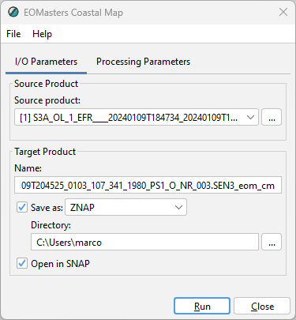
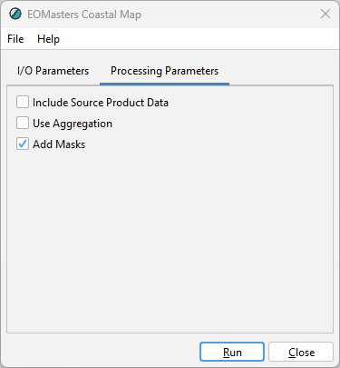

|
|
EOMasters Toolbox | |
 Coastal Map Operator
Coastal Map OperatorThe operator can be used to create a new product which contains the Coastal Map band. It can be used within SNAP
Desktop and invoked from the menu at Raster / Masks, included in a graph in the Graph Builder or invoked
from the command line.
The I/O Parameters tab allows to specify the input and output parameters.

This defines the source product on which the coastal map processing is performed. Either select one of the products already opened in the application or select a new one by opening a product selection dialog.
Name - Used to specify the name of the target product. By default, it is set to the name of the source product with the suffix '_spex' appended.
Save as - Used to specify whether the target product should be saved to the file system. The dropdown list provides a list of available file formats. The text field shows the path to the directory where the processing result will be saved. You can edit the text field directly or select a directory via the '...' button.
Open in SNAP - Used to specify whether the target product should be opened in SNAP. If the target product is not saved, it is opened in SNAP automatically.
The Processing Parameters tab allows to specify parameters for the creation of the Coastal Map.

If enabled the data from the source product will be included in the target product. Otherwise, only the Coastal Map flag band and necessary supplemental data will be added to the target.
Lets you enable the aggregation sampling type. If not enabled Nearest Neighbour is used.
By default, masks are added to the target product. This behaviour can be disabled.
The Coastal Map operator makes use of the Graph Processing Framework, thus it can be used from the command line by
the gpt tool. General information about GPF and GPT can be found on their help pages. Specific
help for the Coastal Map Operator can be obtained with: ${SNAP-INSTALL-DIR}/bin/gpt -h EOM_CoastalMap
This will show the following help:
Usage:
gpt EOM_CoastalMap [options]
Description:
Generates a map which provides indicators for coastal areas.
Source Options:
-SsourceProduct=<file> A geo-coded source product.
This is a mandatory source.
Parameter Options:
-PaddMasks=<boolean> Beside the flag data, for easier usage, masks are added to the product too.
Default value is 'true'.
-Paggregate=<boolean> If true, the operator will use aggregation to compute the coastal map,
instead of nearest neighbour interpolation. This is useful if the resolution of the
source product is significantly lower then the resolution of the coastal map.
Default value is 'false'.
-PincludeSource=<boolean> If true, the operator will include the source data in the target product.
Default value is 'false'.
Graph XML Format:
<graph id="someGraphId">
<version>1.0</version>
<node id="someNodeId">
<operator>EOM_CoastalMap</operator>
<sources>
<sourceProduct>${sourceProduct}</sourceProduct>
</sources>
<parameters>
<includeSource>boolean</includeSource>
<aggregate>boolean</aggregate>
<addMasks>boolean</addMasks>
</parameters>
</node>
</graph>
The following shows an example how the operator can be invoked from the commandline
gpt EOM_CoastalMap -PincludeSource=false -aggregate=true -t coast.znap.zip -SsourceProduct=source.dim